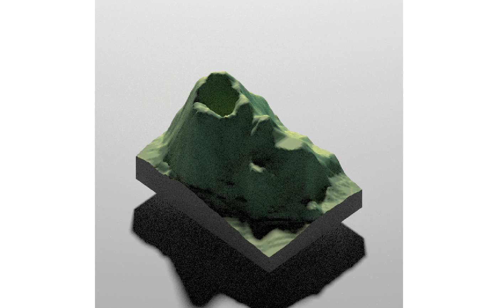
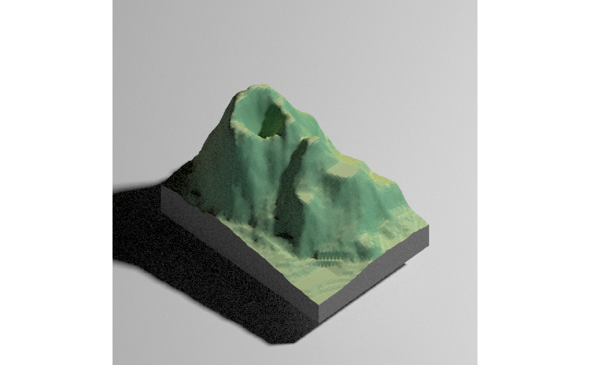
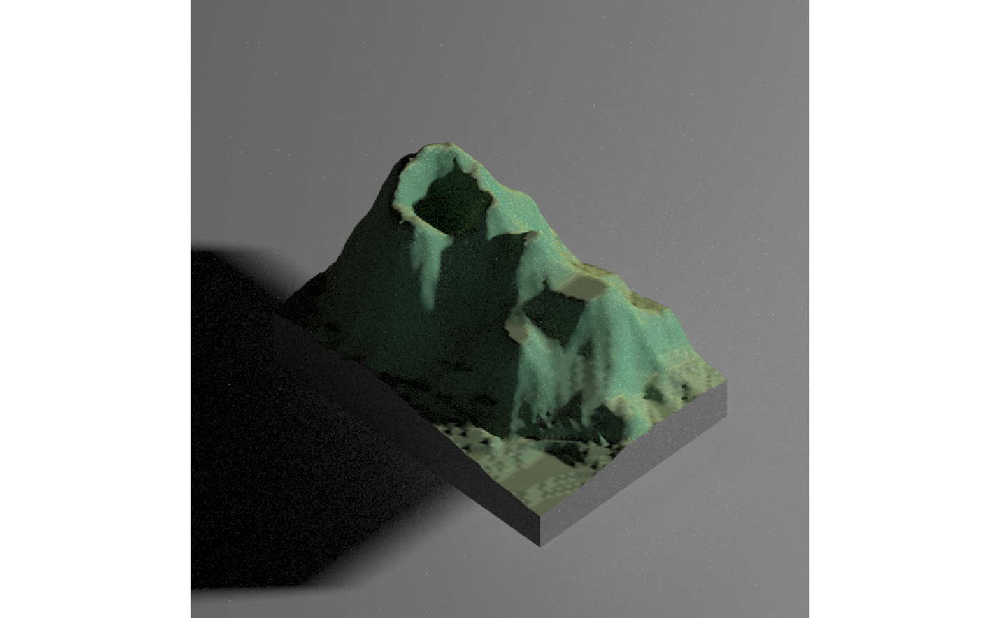
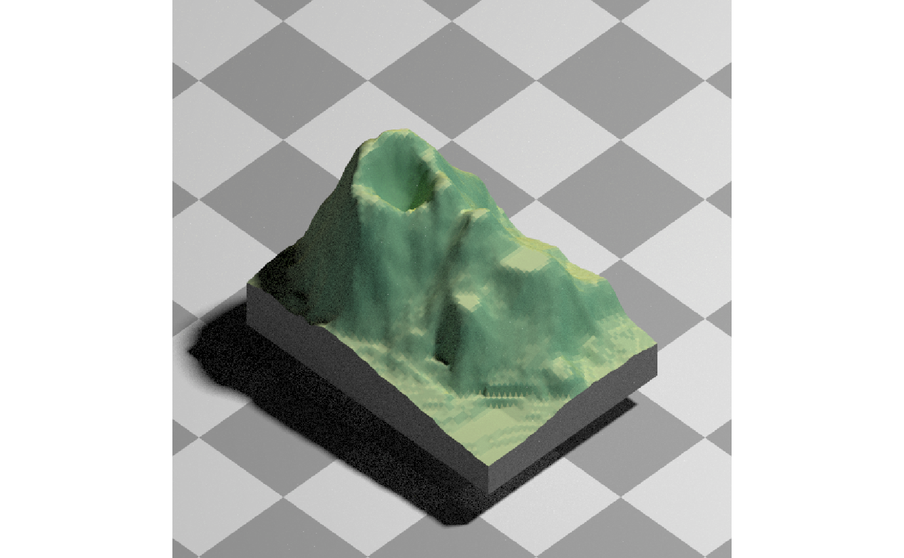
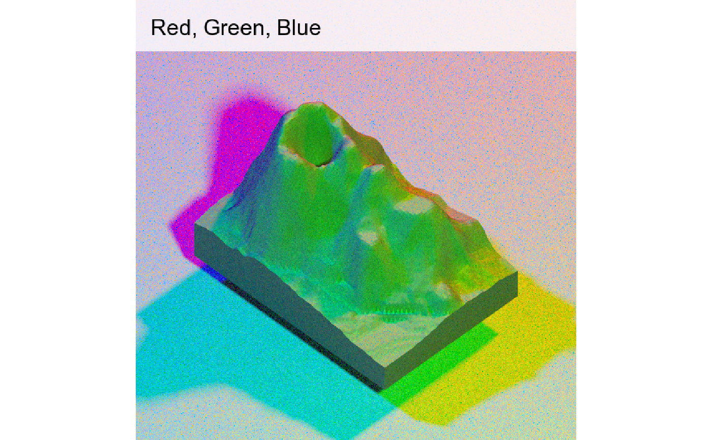
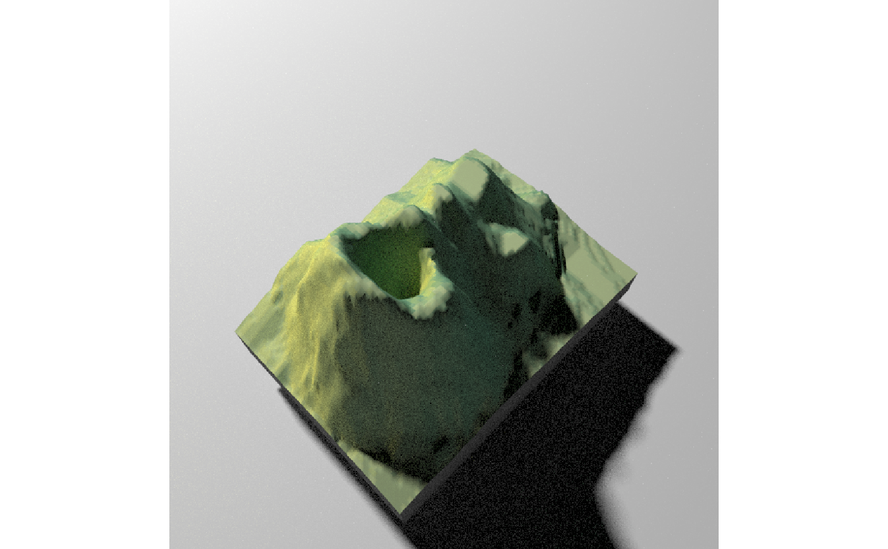
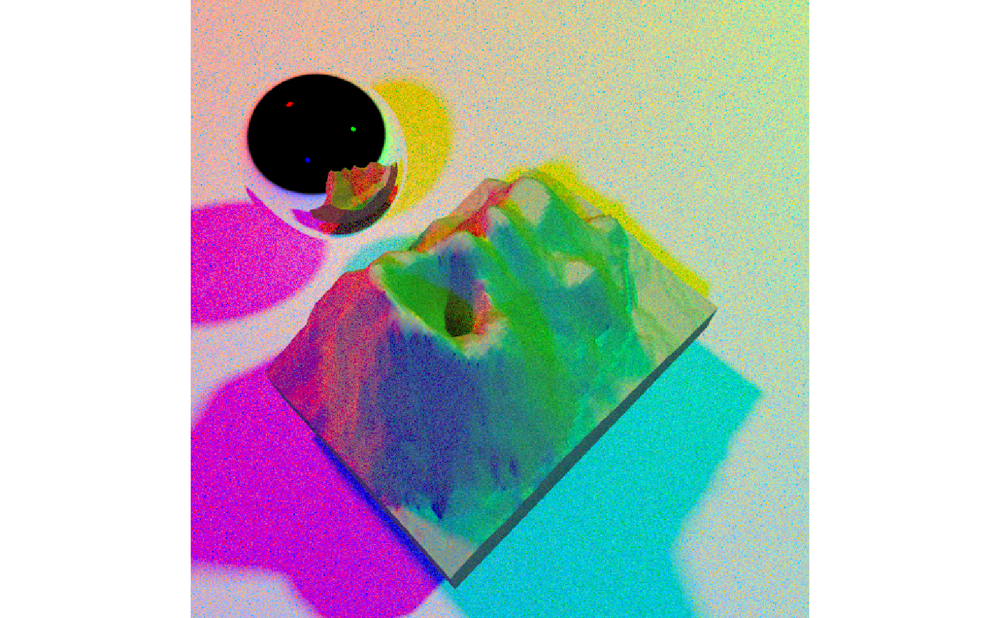
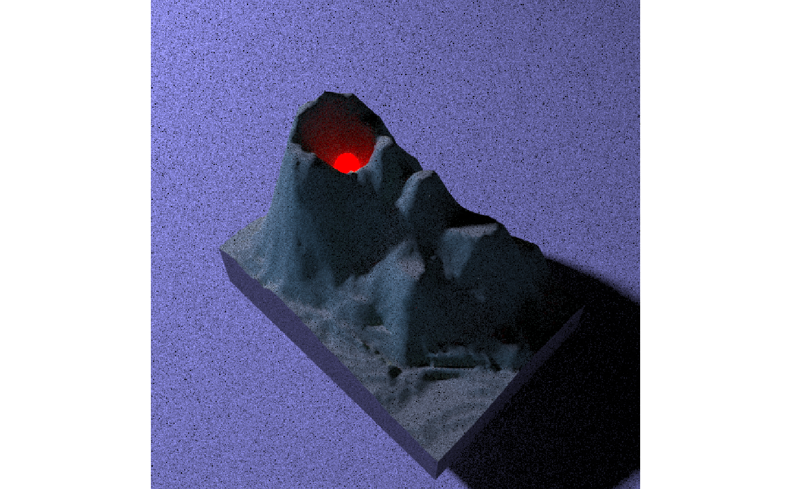
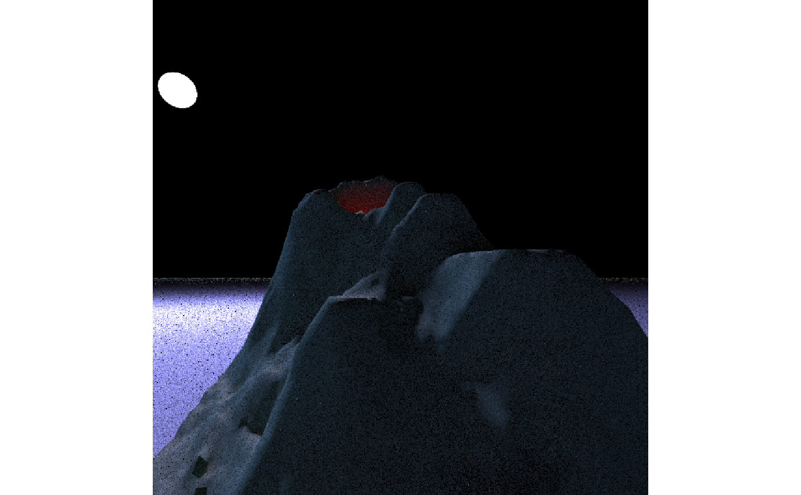

Renders a raytraced version of the displayed rgl scene, using the `rayrender` package. User can specify the light direction, intensity, and color, as well as specify the material of the ground and add additional scene elements.
render_highquality( filename = NULL, light = TRUE, lightdirection = 315, lightaltitude = 45, lightsize = NULL, lightintensity = 500, lightcolor = "white", obj_material = rayrender::diffuse(), cache_filename = NULL, width = NULL, height = NULL, text_angle = NULL, text_size = 6, text_offset = c(0, 0, 0), line_radius = 0.5, point_radius = 0.5, smooth_line = FALSE, scale_text_angle = NULL, scale_text_size = 6, scale_text_offset = c(0, 0, 0), title_text = NULL, title_offset = c(20, 20), title_color = "black", title_size = 30, title_font = "sans", title_bar_color = NULL, title_bar_alpha = 0.5, ground_material = rayrender::diffuse(), ground_size = 1e+05, scene_elements = NULL, camera_location = NULL, camera_lookat = NULL, camera_interpolate = 1, clear = FALSE, print_scene_info = FALSE, clamp_value = 10, ... )
| filename | Filename of saved image. If missing, will display to current device. |
|---|---|
| light | Default `TRUE`. Whether there should be a light in the scene. If not, the scene will be lit with a bluish sky. |
| lightdirection | Default `315`. Position of the light angle around the scene. If this is a vector longer than one, multiple lights will be generated (using values from `lightaltitude`, `lightintensity`, and `lightcolor`) |
| lightaltitude | Default `45`. Angle above the horizon that the light is located. If this is a vector longer than one, multiple lights will be generated (using values from `lightdirection`, `lightintensity`, and `lightcolor`) |
| lightsize | Default `NULL`. Radius of the light(s). Automatically chosen, but can be set here by the user. |
| lightintensity | Default `500`. Intensity of the light. |
| lightcolor | Default `white`. The color of the light. |
| obj_material | Default `rayrender::diffuse()`. The material properties of the object file. |
| cache_filename | Name of temporary filename to store OBJ file, if the user does not want to rewrite the file each time. |
| width | Defaults to the width of the rgl window. Width of the rendering. |
| height | Defaults to the height of the rgl window. Height of the rendering. |
| text_angle | Default `NULL`, which forces the text always to face the camera. If a single angle (degrees), will specify the absolute angle all the labels are facing. If three angles, this will specify all three orientations (relative to the x,y, and z axes) of the text labels. |
| text_size | Default `6`. Height of the text. |
| text_offset | Default `c(0,0,0)`. Offset to be applied to all text labels. |
| line_radius | Default `0.5`. Radius of line/path segments. |
| point_radius | Default `0.5`. Radius of 3D points (rendered with `render_points()`. |
| smooth_line | Default `FALSE`. If `TRUE`, the line will be rendered with a continuous smooth line, rather than straight segments. |
| scale_text_angle | Default `NULL`. Same as `text_angle`, but for the scale bar. |
| scale_text_size | Default `6`. Height of the scale bar text. |
| scale_text_offset | Default `c(0,0,0)`. Offset to be applied to all scale bar text labels. |
| title_text | Default `NULL`. Text. Adds a title to the image, using magick::image_annotate. |
| title_offset | Default `c(20,20)`. Distance from the top-left (default, `gravity` direction in image_annotate) corner to offset the title. |
| title_color | Default `black`. Font color. |
| title_size | Default `30`. Font size in pixels. |
| title_font | Default `sans`. String with font family such as "sans", "mono", "serif", "Times", "Helvetica", "Trebuchet", "Georgia", "Palatino" or "Comic Sans". |
| title_bar_color | Default `NULL`. If a color, this will create a colored bar under the title. |
| title_bar_alpha | Default `0.5`. Transparency of the title bar. |
| ground_material | Default `diffuse()`. Material defined by the rayrender material functions. |
| ground_size | Default `100000`. The width of the plane representing the ground. |
| scene_elements | Default `NULL`. Extra scene elements to add to the scene, created with rayrender. |
| camera_location | Default `NULL`. Custom position of the camera. The `FOV`, `width`, and `height` arguments will still be derived from the rgl window. |
| camera_lookat | Default `NULL`. Custom point at which the camera is directed. The `FOV`, `width`, and `height` arguments will still be derived from the rgl window. |
| camera_interpolate | Default `c(0,0)`. Maximum `1`, minimum `0`. Sets the camera at a point between the `rgl` view and the `camera_location` and `camera_lookat` vectors. |
| clear | Default `FALSE`. If `TRUE`, the current `rgl` device will be cleared. |
| print_scene_info | Default `FALSE`. If `TRUE`, it will print the position and lookat point of the camera. |
| clamp_value | Default `10`. See documentation for `rayrender::render_scene()`. |
| ... | Additional parameters to pass to `rayrender::render_scene`() |
#Render the volcano dataset using pathtracing # \donttest{ volcano %>% sphere_shade() %>% plot_3d(volcano,zscale = 2) render_highquality()
# } #Change position of light # \donttest{ render_highquality(lightdirection = 45)
# } #Change vertical position of light # \donttest{ render_highquality(lightdirection = 45, lightaltitude=10)
# } #Change the ground material # \donttest{ render_highquality(lightdirection = 45, lightaltitude=60, ground_material = rayrender::diffuse(checkerperiod = 30, checkercolor="grey50"))
# } #Add three different color lights and a title # \donttest{ render_highquality(lightdirection = c(0,120,240), lightaltitude=45, lightcolor=c("red","green","blue"), title_text = "Red, Green, Blue", title_bar_color="white", title_bar_alpha=0.8)
# } #Change the camera: # \donttest{ render_camera(theta=-45,phi=60,fov=60,zoom=0.8) render_highquality(lightdirection = c(0), title_bar_color="white", title_bar_alpha=0.8)
# } #Add a shiny metal sphere # \donttest{ render_camera(theta=-45,phi=60,fov=60,zoom=0.8) render_highquality(lightdirection = c(0,120,240), lightaltitude=45, lightcolor=c("red","green","blue"), scene_elements = rayrender::sphere(z=-60,y=0, radius=20,material=rayrender::metal()))
# } #Add a red light to the volcano and change the ambient light to dusk # \donttest{ render_camera(theta=45,phi=45) render_highquality(lightdirection = c(240), lightaltitude=30, lightcolor=c("#5555ff"), scene_elements = rayrender::sphere(z=0,y=15, x=-18, radius=5, material=rayrender::light(color="red",intensity=10)))
# } #Manually change the camera location and direction # \donttest{ render_camera(theta=45,phi=45,fov=90) render_highquality(lightdirection = c(240), lightaltitude=30, lightcolor=c("#5555ff"), camera_location = c(50,10,10), camera_lookat = c(0,15,0), scene_elements = rayrender::sphere(z=0,y=15, x=-18, radius=5, material=rayrender::light(color="red",intensity=10)))